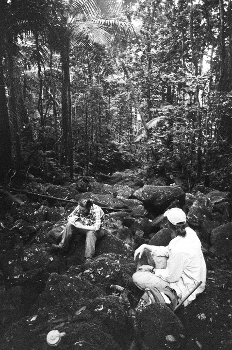
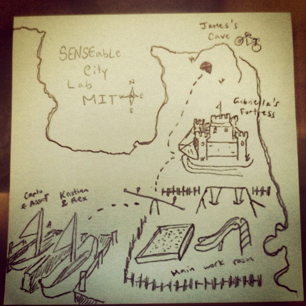
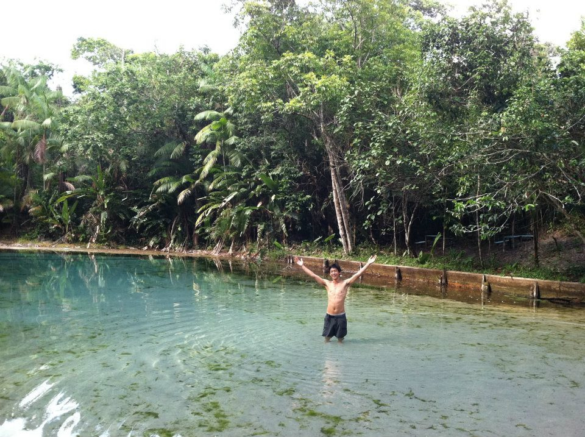
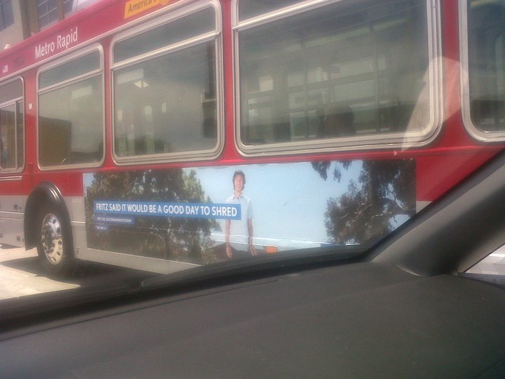
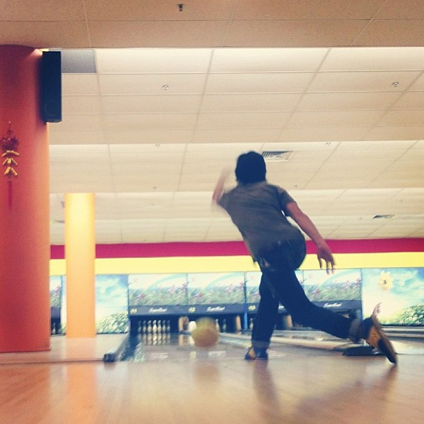
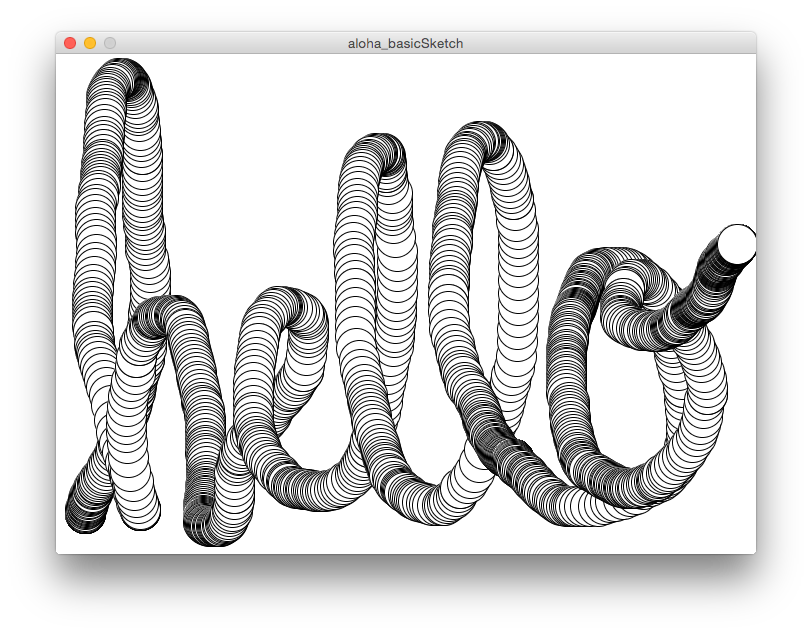
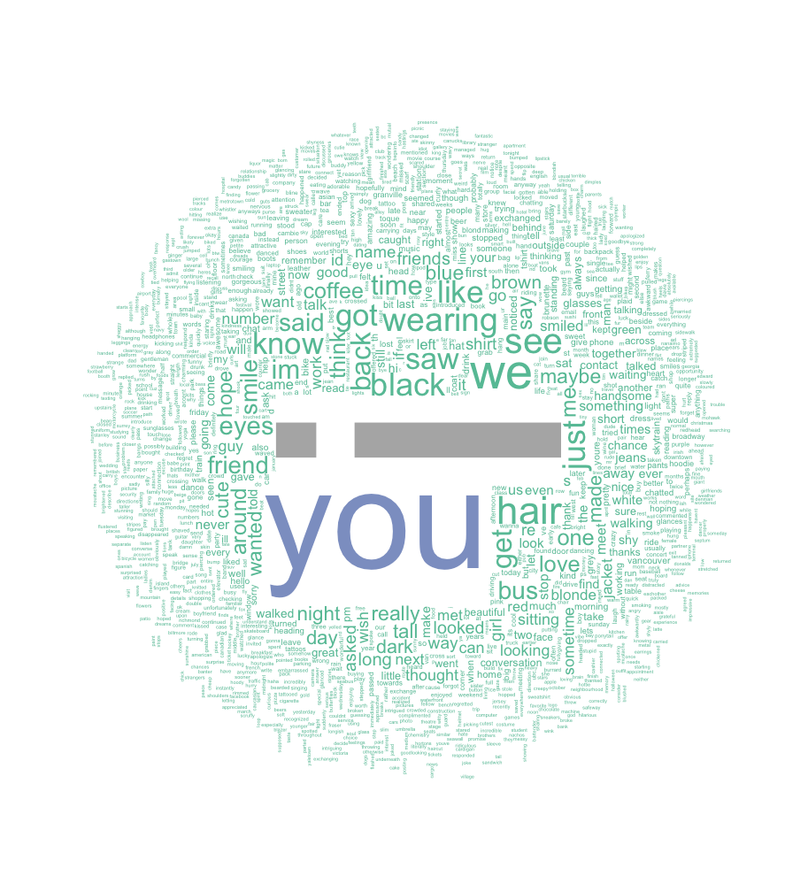

Hello! I'm Joey
Joey Lee /
@joeyklee
Mozilla Science Fellowship Onboarding, Oct. 2015
Who Am I?
I'm a guy since '90 - Vancouver (recent). ph:@quiteafewthings
Skateboarder - Riding on walls in SGP. ph:markcheong
Researcher - Tromping around in Puerto Rico.
Media Artist - Making digital things.
Map maker - drawing connections b/w things
Traveler - Brazilian Amazon
Street Creds:
- Name: Joey Lee
- Born & Raised: SF Bay Area, California - Korean Heritage
- Timeline:
- B.A. Geography/Environmental Studies - UCLA '12
- RA Senseable City Lab - MIT '13
- M.Sc Geography (Biogeoscience) - UBC (soon!)
- Mozilla Fellow (now!)
Fun Fact
I was on billboards in LA '12
I LOVE bowling
Inspiration
Our Changing Environment - We have to do something about Global Climate Change!

Cities - People ~ Environment!

Open Source - Science, Software, Data, & Web!
Speculative/Interaction/Computational Design

Maptime! - Open mapping for all

Processing/P5js Community/ Viz Community - Technological Literacy!

What does Open Science mean to me?
Open Science means...
- Open Knowledge
- Open Opportunities
- for Learning
- for Participation
- for Action
- Open Processes
- for Learning
- for Participation
- for Action
Current & Past Projects
Thesis - Mapping CO2 Emissions in Cities

Aerial Bold - The Search for Letterforms

Teaching @ UBC Geography - Data viz
Personal Projects - "Future Strangers", many more!
Big Atlas of LA Pools - 43,123 Pools, 73 Books, >6k pages

MIT, HubCab - 40% of trips could be saved!

Mind the Gap!
The Gap - Need more skills!

Buy in - How do we get people to care?

Goals
Super keen to:
- learn, learn, learn
- improve programming skils! - hardcore web stuff & viz stuff(the full stack, oh yeah)
- communication and teaching skills
- engage in the culture of open science/communication of science.
Project
AHHH so many ideas...
Idea 1: Narrative Atlas of Open Research @ UBC
- Series of web tools/stories about the places being "touched" by research at UBC.
- Tangible book
- Purpose: Help close the loop of research by developing a set pieces that allow people to interact with the data & learn.
Idea 2: Mapping Library for P5.js
- Visualizaing Geospatial data is tough - learning how to do it is even harder. We have tools like CartoDB (which are AWESOME), but what I'm really interested in is in that moment when you're learning how to work with geospatial data and learning how to code stuff for the web at the same time.
- Why P5? Growing user community - bridging communities together - friendlier learning curve :)
Or both? Plus...
Workshops Galore!
- Geoprocessing in R.
- Geoprocessing in Python
- Web maps!
- Leaflet.js/mapbox.js
- turf.js
- data hacking the web
- Github tutorial
- making slides with Markdown (e.g. Slidify)
- Leaflet.js/mapbox.js
- turf.js